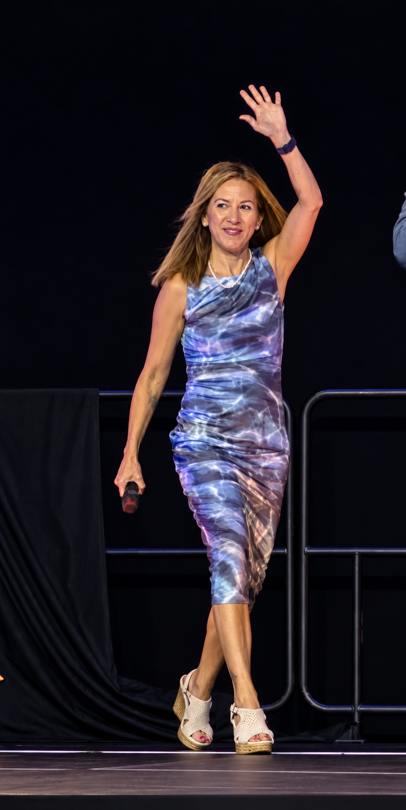

Priscilla A. Grijalva
Building Systems of Hope.
Keynote Speaker | International and National Award Winning School Counselor | Author | Presenter

As a first-generation college student and Latina school counselor, my purpose is to advance equity, inclusion, and social justice in education. I partner with schools, school counselors, educators, and organizations to expand access to postsecondary opportunities, strengthen equitable practices, and create systems that support student success. Through consulting, professional learning, and advocacy, I work to amplify the voices of historically underrepresented and underserved students and help ensure that each and every student has access to the opportunities, resources, and support they need to be successful.
Let’s Build Systems of Hope Together!
Whether you are planning a conference, exploring professional learning opportunities, or looking for ways to strengthen student support systems, I’d welcome the opportunity to connect and collaborate!
Contact